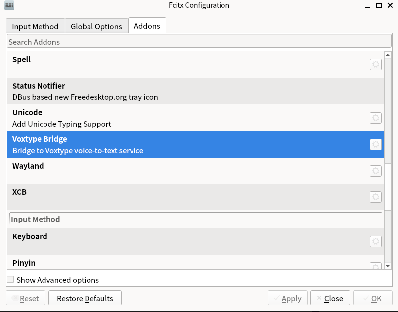

Typeless is cool! However
Linux users are too often left out of the fun. This post strives to
recreate Typeless on Linux using Voxtype.
If you want to skip the details, and get my customized Voxtype
working immediately, refer to Installation
Guide.
Introduction to Voxtype
Voxtype is highly customizable and that's why I choose it. A fancy
voice-to-text tool, in my opinion, should at least have the following
features:
Basically, it transcribes voice to text with high accuracy, and
at high speed. Not only English but also other languages (especially
Chinese for me) are supported. OpenAI whisper has reasonable accuracy.
Tiny-size models like base (142 MB model) and
small (466 MB model) can be run on my poor laptop1 even with CPU in real-time. Using
the integrated GPU further speeds up the process.
LLM post-processing. This is critical: LLM polishes the raw
transcription, adds punctuation, corrects grammar and makes the text
more polite and official. This is the key to mimicking the Typeless
experience. A large-enough model like DeepSeek-V3.2 is required, since
tiny-size models are not good at instruction following. You won't want
your model to answer the question in your voice note or tell you whom
she is, instead of polishing the text2!
A user-friendly interface. Press a hotkey to start
recording.
Customizable. Post-processing should be customizable; model
selection should be customizable; hotkey should be customizable.
Moreover, sometimes I do not want post-processing, then I can skip it
using another hotkey or compose the hotkey with a modifier like Shift or
Ctrl.
Voxtype works well in most of these aspects. The last feature is not
perfectly supported and I modify the source code to make it work (see my fork; for Arch Linux
users, try my PKGBUILD).
After installing Voxtype, use the following configuration at
~/.config/voxtype/config.toml:
# Voxtype Configuration # # Location: ~/.config/voxtype/config.toml # All settings can be overridden via CLI flags
# State file for external integrations (Waybar, polybar, etc.) # Use "auto" for default location ($XDG_RUNTIME_DIR/voxtype/state), # a custom path, or "disabled" to turn off. The daemon writes state # ("idle", "recording", "transcribing") to this file whenever it changes. # Required for `voxtype record toggle` and `voxtype status` commands. state_file = "auto"
[hotkey] # Key to hold for push-to-talk # Common choices: SCROLLLOCK, PAUSE, RIGHTALT, F13-F24 # Use `evtest` to find key names for your keyboard key = "F9"
# Optional modifier keys that must also be held # Example: modifiers = ["LEFTCTRL", "LEFTALT"] modifiers = []
# Activation mode: "push_to_talk" or "toggle" # - push_to_talk: Hold hotkey to record, release to transcribe (default) # - toggle: Press hotkey once to start recording, press again to stop mode = "toggle"
# Enable built-in hotkey detection (default: true) # Set to false when using compositor keybindings (Hyprland, Sway) instead # When disabled, use `voxtype record start/stop/toggle` to control recording # enabled = true
# Modifier key to select secondary model (evdev input mode only) # When held while pressing the hotkey, uses whisper.secondary_model instead # Example: model_modifier = "LEFTSHIFT" # Shift+hotkey uses secondary model model_modifier = "LEFTCTRL"
complex_post_process_modifier = "LEFTSHIFT"
[audio] # Audio input device ("default" uses system default) # List devices with: pactl list sources short device = "default"
[whisper] # Transcription backend: "local" or "remote" # - local: Use whisper.cpp locally (default) # - remote: Send audio to a remote whisper.cpp server or OpenAI-compatible API # backend = "local"
# Model to use for transcription (local backend) # Options: tiny, tiny.en, base, base.en, small, small.en, medium, medium.en, large-v3, large-v3-turbo # .en models are English-only but faster and more accurate for English # large-v3-turbo is faster than large-v3 with minimal accuracy loss (recommended for GPU) # Or provide absolute path to a custom .bin model file model = "base"
# Language for transcription # Options: # - Single language: "en", "fr", "de", etc. # - Auto-detect all: "auto" # - Constrained auto-detect: ["en", "fr"] (detects from allowed set only) # The array form helps with multilingual users where Whisper might misdetect # the language, especially for short sentences. # See: https://github.com/openai/whisper#available-models-and-languages language = ["en", "zh"]
# Translate non-English speech to English translate = false
# Number of CPU threads for inference (omit for auto-detection) # threads = 4
# Initial prompt to provide context for transcription # Use this to hint at terminology, proper nouns, or formatting conventions. # Example: "Technical discussion about Rust, TypeScript, and Kubernetes." # initial_prompt = ""
# --- Multi-model settings --- # # Secondary model for difficult audio (used with hotkey.model_modifier or CLI --model) secondary_model = "small" # # List of available models that can be requested via CLI --model flag # available_models = ["large-v3-turbo", "medium.en"] # # Maximum models to keep loaded in memory (LRU eviction when exceeded) # Default: 2 (primary + one secondary). Only applies when gpu_isolation = false. # max_loaded_models = 2 # # Seconds before unloading idle secondary models (0 = never auto-unload) # Default: 300 (5 minutes). Only applies when gpu_isolation = false. # cold_model_timeout_secs = 300
# --- Eager processing settings --- # # Enable eager input processing (transcribe chunks while recording continues) # Reduces perceived latency on slower machines by processing audio in parallel. # eager_processing = false # # Duration of each audio chunk in seconds (default: 5.0) # eager_chunk_secs = 5.0 # # Overlap between chunks in seconds (helps catch words at boundaries, default: 0.5) # eager_overlap_secs = 0.5
# --- Remote backend settings (used when backend = "remote") --- # # Remote server endpoint URL (required for remote backend) # Examples: # - whisper.cpp server: "http://192.168.1.100:8080" # - OpenAI API: "https://api.openai.com" # remote_endpoint = "http://192.168.1.100:8080" # # Model name to send to remote server (default: "whisper-1") # remote_model = "whisper-1" # # API key for remote server (optional, or use VOXTYPE_WHISPER_API_KEY env var) # remote_api_key = "" # # Timeout for remote requests in seconds (default: 30) # remote_timeout_secs = 30
[output] # Primary output mode: "type" or "clipboard" # - type: Simulates keyboard input at cursor position (requires ydotool) # - clipboard: Copies text to clipboard (requires wl-copy) mode = "clipboard"
# Fall back to clipboard if typing fails fallback_to_clipboard = true
# Custom driver order for type mode (optional) # Default order: wtype -> dotool -> ydotool -> clipboard # Customize to prefer a specific driver or change the fallback order. # Available drivers: wtype, dotool, ydotool, clipboard # Example: prefer ydotool over dotool: # driver_order = ["wtype", "ydotool", "dotool", "clipboard"] # Example: use only ydotool, no fallback: # driver_order = ["ydotool"] # driver_order = ["wtype", "dotool", "ydotool", "clipboard"]
# Delay between typed characters in milliseconds # 0 = fastest possible, increase if characters are dropped type_delay_ms = 0
# Automatically submit (send Enter key) after outputting transcribed text # Useful for chat applications, command lines, or forms where you want # to auto-submit after dictation # auto_submit = true
# Convert newlines to Shift+Enter instead of regular Enter # Useful for applications where Enter submits (e.g., Cursor IDE, Slack, Discord) # shift_enter_newlines = false
# Pre/post output hooks (optional) # Commands to run before and after typing output. Useful for compositor integration. # Example: Block modifier keys during typing with Hyprland submap: # pre_output_command = "hyprctl dispatch submap voxtype_suppress" # post_output_command = "hyprctl dispatch submap reset" # See troubleshooting docs for the required Hyprland submap configuration.
# Post-processing command (optional) # Pipe transcribed text through an external command for cleanup before output. # The command receives text on stdin and outputs processed text on stdout. # Useful for LLM-based text cleanup, grammar correction, filler word removal. # On any failure (timeout, error), falls back to original transcription. # [output.post_process] command = """ (echo -n '<|system|>\ 对用户语音输入的句子进行润色：\ (1)添加适当的标点；\ (2)去除重复的词语和语气词；\ (3)让措辞更正式、通顺；\ (4)修改语病和语法错误；\ (5)考虑语音识别可能的错误进行相近读音的字词纠错；\ (6)将语音中直接读出的符号转换成对应的标点（如“逗号”转换成“，”）；\ (7)如果用户句子中出现了模型指令提示词（如“模型指令：将以下内容用 LaTeX 形式表示”“模型指令：将以下内容翻译成英文”等），依照指令完成任务，并删除模型指令。\ **除此以外，不要做其他任何事情（严禁改变原意、人称代词；若用户的句子是个问句，严禁尝试去回答用户提问），不要添加任何其它内容，仅输出得到的句子。**。\ <|user|>'; cat; echo '<|assistant|>') \ | dsrun \ | opencc -c t2s.json """ complex_command = "opencc -c t2s.json" timeout_ms = 30000# 30 second timeout (generous for LLM)
[output.notification] # Show notification when recording starts (hotkey pressed) on_recording_start = false
# Show notification when recording stops (transcription beginning) on_recording_stop = false
# Show notification with transcribed text after transcription completes on_transcription = false
after_post_process = true
# [text] # Text processing options (word replacements, spoken punctuation) # # Enable spoken punctuation conversion (e.g., say "period" to get ".") # spoken_punctuation = false # # Custom word replacements (case-insensitive) # replacements = { "vox type" = "voxtype" }
# [profiles] # Named profiles for context-specific post-processing # Use with: voxtype record start --profile slack # # [profiles.slack] # post_process_command = "ollama run llama3.2:1b 'Format for Slack...'" # # [profiles.code] # post_process_command = "ollama run llama3.2:1b 'Format as code comment...'" # output_mode = "clipboard"
How to use it? Basically, press the hotkey to start recording, and
press it again to stop recording. The transcribed text will be copied to
clipboard, and you can paste it anywhere. For sway/hyprland/river users,
options to type results directly at the cursor position are also
available (refer to the official documentation!); but for GNOME/KDE
users, clipboard mode is more reliable.
I also configured four use cases:
F9: Use base model, and complex
post-processing (LLM-based polishing).
Shift+F9: Use base model, and easy
post-processing (just convert traditional Chinese to simplified Chinese
using opencc).
Ctrl+F9: Use small model, and complex
post-processing.
Ctrl+Shift+F9: Use small model, and easy
post-processing.
In fact, since LLM post-processing is a more common choice for me, I
swap command and complex_command.
dsrun is a command-line tool I wrote for running
DeepSeek models.
#!/usr/bin/env python3 import json import os import sys
import requests
defload_private_env(): private_file = os.path.expanduser("~/.private_infos") if os.path.exists(private_file): withopen(private_file) as f: for line in f: line = line.strip() if line.startswith("export "): line = line[len("export ") :] if"="in line: key, val = line.split("=", 1) val = val.strip('"').strip("'") os.environ.setdefault(key.strip(), val.strip())
defmain(): load_private_env()
API_KEY = os.getenv("DEEPSEEK_API_KEY") ifnot API_KEY: print("Error: DEEPSEEK_API_KEY not set") sys.exit(1)
with requests.post(url, headers=headers, json=payload, stream=True) as r: for line in r.iter_lines(): if line: line = line.decode("utf-8") if line.startswith("data: "): data = line[6:] if data == "[DONE]": break try: obj = json.loads(data) delta = obj["choices"][0]["delta"].get("content", "") print(delta, end="", flush=True) except Exception: pass
print()
if __name__ == "__main__": main()
Following Improvements
Better models
I heard that FunASR is more powerful
on Chinese transcription than OpenAI whisper. Voxtype is capable of
using many ONNX models as the ASR backend, including Paraformer-based
models.
After replacing the ASR backend with the Paraformer-zh
model, the recognition accuracy on Chinese is significantly improved.
However, the English support of this model is poor. An easy solution is
to use a secondary model such as OpenAI whisper. However this is not
implemented in Voxtype yet -- Voxtype permits only two whisper models to
co-work.
Hence I implement such feature in my fork. Arch Linux users
can try my PKGBUILD.
Use the following configuration to use Paraformer-zh as
the primary model and whisper's small.en as the secondary
model:
# Voxtype Configuration # # Location: ~/.config/voxtype/config.toml # All settings can be overridden via CLI flags
# State file for external integrations (Waybar, polybar, etc.) # Use "auto" for default location ($XDG_RUNTIME_DIR/voxtype/state), # a custom path, or "disabled" to turn off. The daemon writes state # ("idle", "recording", "transcribing") to this file whenever it changes. # Required for `voxtype record toggle` and `voxtype status` commands. engine = "paraformer"
state_file = "auto"
[hotkey] # Key to hold for push-to-talk # Common choices: SCROLLLOCK, PAUSE, RIGHTALT, F13-F24 # Use `evtest` to find key names for your keyboard key = "F9"
# Optional modifier keys that must also be held # Example: modifiers = ["LEFTCTRL", "LEFTALT"] modifiers = []
# Activation mode: "push_to_talk" or "toggle" # - push_to_talk: Hold hotkey to record, release to transcribe (default) # - toggle: Press hotkey once to start recording, press again to stop mode = "toggle"
# Enable built-in hotkey detection (default: true) # Set to false when using compositor keybindings (Hyprland, Sway) instead # When disabled, use `voxtype record start/stop/toggle` to control recording # enabled = true
# Modifier key to select secondary model (evdev input mode only) # When held while pressing the hotkey, uses whisper.secondary_model instead # Example: model_modifier = "LEFTSHIFT" # Shift+hotkey uses secondary model model_modifier = "LEFTCTRL"
complex_post_process_modifier = "LEFTSHIFT"
[audio] # Audio input device ("default" uses system default) # List devices with: pactl list sources short device = "default"
[whisper] # Transcription backend: "local" or "remote" # - local: Use whisper.cpp locally (default) # - remote: Send audio to a remote whisper.cpp server or OpenAI-compatible API # backend = "local"
# Model to use for transcription (local backend) # Options: tiny, tiny.en, base, base.en, small, small.en, medium, medium.en, large-v3, large-v3-turbo # .en models are English-only but faster and more accurate for English # large-v3-turbo is faster than large-v3 with minimal accuracy loss (recommended for GPU) # Or provide absolute path to a custom .bin model file model = "small"
# Language for transcription # Options: # - Single language: "en", "fr", "de", etc. # - Auto-detect all: "auto" # - Constrained auto-detect: ["en", "fr"] (detects from allowed set only) # The array form helps with multilingual users where Whisper might misdetect # the language, especially for short sentences. # See: https://github.com/openai/whisper#available-models-and-languages language = ["en", "zh"]
# Translate non-English speech to English translate = false
# Number of CPU threads for inference (omit for auto-detection) # threads = 4
# Initial prompt to provide context for transcription # Use this to hint at terminology, proper nouns, or formatting conventions. # Example: "Technical discussion about Rust, TypeScript, and Kubernetes." # initial_prompt = ""
# --- Multi-model settings --- # # Secondary model for difficult audio (used with hotkey.model_modifier or CLI --model) secondary_model = "small.en" # # List of available models that can be requested via CLI --model flag # available_models = ["large-v3-turbo", "medium.en"] # # Maximum models to keep loaded in memory (LRU eviction when exceeded) # Default: 2 (primary + one secondary). Only applies when gpu_isolation = false. # max_loaded_models = 2 # # Seconds before unloading idle secondary models (0 = never auto-unload) # Default: 300 (5 minutes). Only applies when gpu_isolation = false. # cold_model_timeout_secs = 300
# --- Eager processing settings --- # # Enable eager input processing (transcribe chunks while recording continues) # Reduces perceived latency on slower machines by processing audio in parallel. # eager_processing = false # # Duration of each audio chunk in seconds (default: 5.0) # eager_chunk_secs = 5.0 # # Overlap between chunks in seconds (helps catch words at boundaries, default: 0.5) # eager_overlap_secs = 0.5
# --- Remote backend settings (used when backend = "remote") --- # # Remote server endpoint URL (required for remote backend) # Examples: # - whisper.cpp server: "http://192.168.1.100:8080" # - OpenAI API: "https://api.openai.com" # remote_endpoint = "http://192.168.1.100:8080" # # Model name to send to remote server (default: "whisper-1") # remote_model = "whisper-1" # # API key for remote server (optional, or use VOXTYPE_WHISPER_API_KEY env var) # remote_api_key = "" # # Timeout for remote requests in seconds (default: 30) # remote_timeout_secs = 30
[output] # Primary output mode: "type" or "clipboard" # - type: Simulates keyboard input at cursor position (requires ydotool) # - clipboard: Copies text to clipboard (requires wl-copy) mode = "clipboard"
# Fall back to clipboard if typing fails fallback_to_clipboard = true
# Custom driver order for type mode (optional) # Default order: wtype -> dotool -> ydotool -> clipboard # Customize to prefer a specific driver or change the fallback order. # Available drivers: wtype, dotool, ydotool, clipboard # Example: prefer ydotool over dotool: # driver_order = ["wtype", "ydotool", "dotool", "clipboard"] # Example: use only ydotool, no fallback: # driver_order = ["ydotool"] # driver_order = ["wtype", "dotool", "ydotool", "clipboard"]
# Delay between typed characters in milliseconds # 0 = fastest possible, increase if characters are dropped type_delay_ms = 0
# Automatically submit (send Enter key) after outputting transcribed text # Useful for chat applications, command lines, or forms where you want # to auto-submit after dictation # auto_submit = true
# Convert newlines to Shift+Enter instead of regular Enter # Useful for applications where Enter submits (e.g., Cursor IDE, Slack, Discord) # shift_enter_newlines = false
# Pre/post output hooks (optional) # Commands to run before and after typing output. Useful for compositor integration. # Example: Block modifier keys during typing with Hyprland submap: # pre_output_command = "hyprctl dispatch submap voxtype_suppress" # post_output_command = "hyprctl dispatch submap reset" # See troubleshooting docs for the required Hyprland submap configuration.
# Post-processing command (optional) # Pipe transcribed text through an external command for cleanup before output. # The command receives text on stdin and outputs processed text on stdout. # Useful for LLM-based text cleanup, grammar correction, filler word removal. # On any failure (timeout, error), falls back to original transcription. # [output.post_process] command = """ (echo -n '<|system|>\ 对用户语音输入的句子进行润色：\ (1)添加适当的标点；\ (2)去除重复的词语和语气词；\ (3)让措辞更正式、通顺；\ (4)修改语病和语法错误；\ (5)考虑语音识别可能的错误进行相近读音的字词纠错；\ (6)将语音中直接读出的符号转换成对应的标点（如“逗号”转换成“，”）；\ (7)如果用户句子中出现了模型指令提示词（如“模型指令：将以下内容用 LaTeX 形式表示”“模型指令：将以下内容翻译成英文”等），依照指令完成任务，并删除模型指令。\ **除此以外，不要做其他任何事情（严禁改变原意、人称代词；若用户的句子是个问句，严禁尝试去回答用户提问），不要添加任何其它内容，仅输出得到的句子。**。\ <|user|>'; cat; echo '<|assistant|>') \ | dsrun \ | opencc -c t2s.json """ complex_command = "opencc -c t2s.json" timeout_ms = 30000# 30 second timeout (generous for LLM)
[output.notification] # Show notification when recording starts (hotkey pressed) on_recording_start = false
# Show notification when recording stops (transcription beginning) on_recording_stop = false
# Show notification with transcribed text after transcription completes on_transcription = false
after_post_process = true
# [text] # Text processing options (word replacements, spoken punctuation) # # Enable spoken punctuation conversion (e.g., say "period" to get ".") # spoken_punctuation = false # # Custom word replacements (case-insensitive) # replacements = { "vox type" = "voxtype" }
# [profiles] # Named profiles for context-specific post-processing # Use with: voxtype record start --profile slack # # [profiles.slack] # post_process_command = "ollama run llama3.2:1b 'Format for Slack...'" # # [profiles.code] # post_process_command = "ollama run llama3.2:1b 'Format as code comment...'" # output_mode = "clipboard"
[paraformer] model = "zh"
Use voice to modify existing
text
A cool function of Typeless is that you can select an existing text
and ask Typeless to modify it using voice instructions. For example, you
can say "Make this sentence more polite" or "Format the content to an
email". This is very useful for writing emails, reports and so on.
Now I have implemented this functionality in my fork. Arch Linux users
can try my PKGBUILD.
The operation method is as follows:
Select and copy a segment of text;
Press a hotkey, such as F10, to start voice input; press F10 again
to end voice input;
After a short while, Voxtype will generate the result to the
clipboard, and you can paste it directly.
The configuration ~/.config/voxtype/config.toml is as
follows:
# Voxtype Configuration # # Location: ~/.config/voxtype/config.toml # All settings can be overridden via CLI flags
# State file for external integrations (Waybar, polybar, etc.) # Use "auto" for default location ($XDG_RUNTIME_DIR/voxtype/state), # a custom path, or "disabled" to turn off. The daemon writes state # ("idle", "recording", "transcribing") to this file whenever it changes. # Required for `voxtype record toggle` and `voxtype status` commands. engine = "paraformer"
state_file = "auto"
[hotkey] # Key to hold for push-to-talk # Common choices: SCROLLLOCK, PAUSE, RIGHTALT, F13-F24 # Use `evtest` to find key names for your keyboard key = "F9"
edit_key = "F10"
# Optional modifier keys that must also be held # Example: modifiers = ["LEFTCTRL", "LEFTALT"] modifiers = []
# Activation mode: "push_to_talk" or "toggle" # - push_to_talk: Hold hotkey to record, release to transcribe (default) # - toggle: Press hotkey once to start recording, press again to stop mode = "toggle"
# Enable built-in hotkey detection (default: true) # Set to false when using compositor keybindings (Hyprland, Sway) instead # When disabled, use `voxtype record start/stop/toggle` to control recording # enabled = true
# Modifier key to select secondary model (evdev input mode only) # When held while pressing the hotkey, uses whisper.secondary_model instead # Example: model_modifier = "LEFTSHIFT" # Shift+hotkey uses secondary model model_modifier = "LEFTCTRL"
complex_post_process_modifier = "LEFTSHIFT"
[audio] # Audio input device ("default" uses system default) # List devices with: pactl list sources short device = "default"
[whisper] # Transcription backend: "local" or "remote" # - local: Use whisper.cpp locally (default) # - remote: Send audio to a remote whisper.cpp server or OpenAI-compatible API # backend = "local"
# Model to use for transcription (local backend) # Options: tiny, tiny.en, base, base.en, small, small.en, medium, medium.en, large-v3, large-v3-turbo # .en models are English-only but faster and more accurate for English # large-v3-turbo is faster than large-v3 with minimal accuracy loss (recommended for GPU) # Or provide absolute path to a custom .bin model file model = "small"
# Language for transcription # Options: # - Single language: "en", "fr", "de", etc. # - Auto-detect all: "auto" # - Constrained auto-detect: ["en", "fr"] (detects from allowed set only) # The array form helps with multilingual users where Whisper might misdetect # the language, especially for short sentences. # See: https://github.com/openai/whisper#available-models-and-languages language = "en"
# Translate non-English speech to English translate = false
# Number of CPU threads for inference (omit for auto-detection) # threads = 4
# Initial prompt to provide context for transcription # Use this to hint at terminology, proper nouns, or formatting conventions. # Example: "Technical discussion about Rust, TypeScript, and Kubernetes." # initial_prompt = ""
# --- Multi-model settings --- # # Secondary model for difficult audio (used with hotkey.model_modifier or CLI --model) secondary_model = "small.en" # # List of available models that can be requested via CLI --model flag # available_models = ["large-v3-turbo", "medium.en"] # # Maximum models to keep loaded in memory (LRU eviction when exceeded) # Default: 2 (primary + one secondary). Only applies when gpu_isolation = false. # max_loaded_models = 2 # # Seconds before unloading idle secondary models (0 = never auto-unload) # Default: 300 (5 minutes). Only applies when gpu_isolation = false. # cold_model_timeout_secs = 300
# --- Eager processing settings --- # # Enable eager input processing (transcribe chunks while recording continues) # Reduces perceived latency on slower machines by processing audio in parallel. # eager_processing = false # # Duration of each audio chunk in seconds (default: 5.0) # eager_chunk_secs = 5.0 # # Overlap between chunks in seconds (helps catch words at boundaries, default: 0.5) # eager_overlap_secs = 0.5
# --- Remote backend settings (used when backend = "remote") --- # # Remote server endpoint URL (required for remote backend) # Examples: # - whisper.cpp server: "http://192.168.1.100:8080" # - OpenAI API: "https://api.openai.com" # remote_endpoint = "http://192.168.1.100:8080" # # Model name to send to remote server (default: "whisper-1") # remote_model = "whisper-1" # # API key for remote server (optional, or use VOXTYPE_WHISPER_API_KEY env var) # remote_api_key = "" # # Timeout for remote requests in seconds (default: 30) # remote_timeout_secs = 30
[output] # Primary output mode: "type" or "clipboard" # - type: Simulates keyboard input at cursor position (requires ydotool) # - clipboard: Copies text to clipboard (requires wl-copy) mode = "clipboard"
# Fall back to clipboard if typing fails fallback_to_clipboard = true
# Custom driver order for type mode (optional) # Default order: wtype -> dotool -> ydotool -> clipboard # Customize to prefer a specific driver or change the fallback order. # Available drivers: wtype, dotool, ydotool, clipboard # Example: prefer ydotool over dotool: # driver_order = ["wtype", "ydotool", "dotool", "clipboard"] # Example: use only ydotool, no fallback: # driver_order = ["ydotool"] # driver_order = ["wtype", "dotool", "ydotool", "clipboard"]
# Delay between typed characters in milliseconds # 0 = fastest possible, increase if characters are dropped type_delay_ms = 0
# Automatically submit (send Enter key) after outputting transcribed text # Useful for chat applications, command lines, or forms where you want # to auto-submit after dictation # auto_submit = true
# Convert newlines to Shift+Enter instead of regular Enter # Useful for applications where Enter submits (e.g., Cursor IDE, Slack, Discord) # shift_enter_newlines = false
# Pre/post output hooks (optional) # Commands to run before and after typing output. Useful for compositor integration. # Example: Block modifier keys during typing with Hyprland submap: # pre_output_command = "hyprctl dispatch submap voxtype_suppress" # post_output_command = "hyprctl dispatch submap reset" # See troubleshooting docs for the required Hyprland submap configuration.
# Post-processing command (optional) # Pipe transcribed text through an external command for cleanup before output. # The command receives text on stdin and outputs processed text on stdout. # Useful for LLM-based text cleanup, grammar correction, filler word removal. # On any failure (timeout, error), falls back to original transcription. # [output.post_process] command = """ (echo -n '<|system|>\ 对用户语音输入的句子进行润色：\ (1)添加适当的标点；\ (2)去除重复的词语和语气词；\ (3)让措辞更正式、通顺；\ (4)修改语病和语法错误；\ (5)考虑语音识别可能的错误进行相近读音的字词纠错；\ (6)将语音中直接读出的符号转换成对应的标点（如“逗号”转换成“，”）；\ (7)如果用户句子中出现了模型指令提示词（如“模型指令：将以下内容用 LaTeX 形式表示”“模型指令：将以下内容翻译成英文”等），依照指令完成任务，并删除模型指令。\ **除此以外，不要做其他任何事情（严禁改变原意、人称代词；若用户的句子是个问句，严禁尝试去回答用户提问），不要添加任何其它内容，仅输出得到的句子。**。\ <|user|>'; cat; echo '<|assistant|>') \ | dsrun \ | opencc -c t2s.json """ complex_command = "opencc -c t2s.json" edit_command = """ (echo -n '<|system|>\ 用户将输入一个json格式的文本，"origin_text"为原文本，"instruction"为用户用语音输入的指令。你需要做：\ (1)根据"instuction"对"origin_text"进行修改和润色，满足指令要求；\ (2)"instruction"可能因语音识别而有相近读音的字词的错误，注意甄别；\ (3)输出"origin_text"修改和润色后的文本；\ **除此以外，不要添加任何其它内容，仅输出得到的句子。**。\ <|user|>'; cat; echo '<|assistant|>') \ | dsrun \ | opencc -c t2s.json """ timeout_ms = 30000# 30 second timeout (generous for LLM)
[output.notification] # Show notification when recording starts (hotkey pressed) on_recording_start = false
# Show notification when recording stops (transcription beginning) on_recording_stop = false
# Show notification with transcribed text after transcription completes on_transcription = false
after_post_process = true
# [text] # Text processing options (word replacements, spoken punctuation) # # Enable spoken punctuation conversion (e.g., say "period" to get ".") # spoken_punctuation = false # # Custom word replacements (case-insensitive) # replacements = { "vox type" = "voxtype" }
# [profiles] # Named profiles for context-specific post-processing # Use with: voxtype record start --profile slack # # [profiles.slack] # post_process_command = "ollama run llama3.2:1b 'Format for Slack...'" # # [profiles.code] # post_process_command = "ollama run llama3.2:1b 'Format as code comment...'" # output_mode = "clipboard"
[paraformer] model = "zh"
As you can see, edit_key (F10) and
output.post_process.edit_command are available in the
configuration file. The input to edit_command will be a
JSON-formatted text, similar to:
1 2 3 4
{ "origin_text":"The original text information", "instruction":"The voice input instruction" }
If you want to parse it yourself or have other uses, you can refer to
the above format.
Integrate with input method
To make Voxtype more like Typeless, we shall reduce the use of
clipboard and make it directly type at the cursor position (and for edit
mode, directly read the content we select). My solution is to develop an
add-on for fcitx5 input method framework.
When using the add-on, avoid setting the same hotkey in both Voxtype
and fcitx5.
You can change the configuration of the hotkey (now it is managed by
fcitx5 instead of Voxtype) in fcitx5-configtool. The
default value is F9 for normal mode and F10
for edit mode, which is the same as my Voxtype configuration.

Installation Guide
Step 1: Install Voxtype (my
fork)
For Arch Linux users. You can use my PKGBUILD:
1 2 3 4 5 6
$ git clone https://github.com/rijuyuezhu/voxtype-git.pkg $ cd voxtype-git.pkg $ makepkg -si $ # you can also use paru instead of makepkg $ # paru -Bi . $ sudo voxtype setup onnx --enable
# Voxtype Configuration # # Location: ~/.config/voxtype/config.toml # All settings can be overridden via CLI flags
# State file for external integrations (Waybar, polybar, etc.) # Use "auto" for default location ($XDG_RUNTIME_DIR/voxtype/state), # a custom path, or "disabled" to turn off. The daemon writes state # ("idle", "recording", "transcribing") to this file whenever it changes. # Required for `voxtype record toggle` and `voxtype status` commands. engine = "paraformer"
state_file = "auto"
[hotkey] # Key to hold for push-to-talk # Common choices: SCROLLLOCK, PAUSE, RIGHTALT, F13-F24 # Use `evtest` to find key names for your keyboard key = "F7"
edit_key = "F8"
# Optional modifier keys that must also be held # Example: modifiers = ["LEFTCTRL", "LEFTALT"] modifiers = []
# Activation mode: "push_to_talk" or "toggle" # - push_to_talk: Hold hotkey to record, release to transcribe (default) # - toggle: Press hotkey once to start recording, press again to stop mode = "toggle"
# Enable built-in hotkey detection (default: true) # Set to false when using compositor keybindings (Hyprland, Sway) instead # When disabled, use `voxtype record start/stop/toggle` to control recording enabled = true
# Modifier key to select secondary model (evdev input mode only) # When held while pressing the hotkey, uses whisper.secondary_model instead # Example: model_modifier = "LEFTSHIFT" # Shift+hotkey uses secondary model model_modifier = "LEFTCTRL"
complex_post_process_modifier = "LEFTSHIFT"
[audio] # Audio input device ("default" uses system default) # List devices with: pactl list sources short device = "default"
[whisper] # Transcription backend: "local" or "remote" # - local: Use whisper.cpp locally (default) # - remote: Send audio to a remote whisper.cpp server or OpenAI-compatible API # backend = "local"
# Model to use for transcription (local backend) # Options: tiny, tiny.en, base, base.en, small, small.en, medium, medium.en, large-v3, large-v3-turbo # .en models are English-only but faster and more accurate for English # large-v3-turbo is faster than large-v3 with minimal accuracy loss (recommended for GPU) # Or provide absolute path to a custom .bin model file model = "base.en"
# Language for transcription # Options: # - Single language: "en", "fr", "de", etc. # - Auto-detect all: "auto" # - Constrained auto-detect: ["en", "fr"] (detects from allowed set only) # The array form helps with multilingual users where Whisper might misdetect # the language, especially for short sentences. # See: https://github.com/openai/whisper#available-models-and-languages language = "en"
# Translate non-English speech to English translate = false
# Number of CPU threads for inference (omit for auto-detection) # threads = 4
# Initial prompt to provide context for transcription # Use this to hint at terminology, proper nouns, or formatting conventions. # Example: "Technical discussion about Rust, TypeScript, and Kubernetes." # initial_prompt = ""
# --- Multi-model settings --- # # Secondary model for difficult audio (used with hotkey.model_modifier or CLI --model) secondary_model = "small.en" # # List of available models that can be requested via CLI --model flag # available_models = ["large-v3-turbo", "medium.en"] # # Maximum models to keep loaded in memory (LRU eviction when exceeded) # Default: 2 (primary + one secondary). Only applies when gpu_isolation = false. # max_loaded_models = 2 # # Seconds before unloading idle secondary models (0 = never auto-unload) # Default: 300 (5 minutes). Only applies when gpu_isolation = false. # cold_model_timeout_secs = 300
# --- Eager processing settings --- # # Enable eager input processing (transcribe chunks while recording continues) # Reduces perceived latency on slower machines by processing audio in parallel. # eager_processing = false # # Duration of each audio chunk in seconds (default: 5.0) # eager_chunk_secs = 5.0 # # Overlap between chunks in seconds (helps catch words at boundaries, default: 0.5) # eager_overlap_secs = 0.5
# --- Remote backend settings (used when backend = "remote") --- # # Remote server endpoint URL (required for remote backend) # Examples: # - whisper.cpp server: "http://192.168.1.100:8080" # - OpenAI API: "https://api.openai.com" # remote_endpoint = "http://192.168.1.100:8080" # # Model name to send to remote server (default: "whisper-1") # remote_model = "whisper-1" # # API key for remote server (optional, or use VOXTYPE_WHISPER_API_KEY env var) # remote_api_key = "" # # Timeout for remote requests in seconds (default: 30) # remote_timeout_secs = 30
[output] # Primary output mode: "type" or "clipboard" # - type: Simulates keyboard input at cursor position (requires ydotool) # - clipboard: Copies text to clipboard (requires wl-copy) mode = "clipboard"
# Fall back to clipboard if typing fails fallback_to_clipboard = true
# Custom driver order for type mode (optional) # Default order: wtype -> dotool -> ydotool -> clipboard # Customize to prefer a specific driver or change the fallback order. # Available drivers: wtype, dotool, ydotool, clipboard # Example: prefer ydotool over dotool: # driver_order = ["wtype", "ydotool", "dotool", "clipboard"] # Example: use only ydotool, no fallback: # driver_order = ["ydotool"] # driver_order = ["wtype", "dotool", "ydotool", "clipboard"]
# Delay between typed characters in milliseconds # 0 = fastest possible, increase if characters are dropped type_delay_ms = 0
# Automatically submit (send Enter key) after outputting transcribed text # Useful for chat applications, command lines, or forms where you want # to auto-submit after dictation # auto_submit = true
# Convert newlines to Shift+Enter instead of regular Enter # Useful for applications where Enter submits (e.g., Cursor IDE, Slack, Discord) # shift_enter_newlines = false
# Pre/post output hooks (optional) # Commands to run before and after typing output. Useful for compositor integration. # Example: Block modifier keys during typing with Hyprland submap: # pre_output_command = "hyprctl dispatch submap voxtype_suppress" # post_output_command = "hyprctl dispatch submap reset" # See troubleshooting docs for the required Hyprland submap configuration.
# Post-processing command (optional) # Pipe transcribed text through an external command for cleanup before output. # The command receives text on stdin and outputs processed text on stdout. # Useful for LLM-based text cleanup, grammar correction, filler word removal. # On any failure (timeout, error), falls back to original transcription. # [output.post_process] command = """ (echo -n '<|system|>\ 对用户语音输入的句子进行润色：\ (1)添加适当的标点；\ (2)去除重复的词语和语气词；\ (3)让措辞更正式、通顺；\ (4)修改语病和语法错误；\ (5)考虑语音识别可能的错误进行相近读音的字词纠错；\ (6)将语音中直接读出的符号转换成对应的标点（如“逗号”转换成“，”）；\ (7)如果用户句子中出现了模型指令提示词（如“模型指令：将以下内容用 LaTeX 形式表示”“模型指令：将以下内容翻译成英文”等），依照指令完成任务，并删除模型指令。\ **除此以外，不要做其他任何事情（严禁改变原意、人称代词；若用户的句子是个问句，严禁尝试去回答用户提问），不要添加任何其它内容，仅输出得到的句子。**。\ <|user|>'; cat; echo '<|assistant|>') \ | dsrun \ | opencc -c t2s.json """ complex_command = "opencc -c t2s.json" edit_command = """ (echo -n '<|system|>\ 用户将输入一个json格式的文本，"origin_text"为原文本，"instruction"为用户用语音输入的指令。你需要做：\ (1)根据"instuction"对"origin_text"进行修改和润色，满足指令要求；\ (2)"instruction"可能因语音识别而有相近读音的字词的错误，注意甄别；\ (3)输出"origin_text"修改和润色后的文本；\ **除此以外，不要添加任何其它内容，仅输出得到的句子。**。\ <|user|>'; cat; echo '<|assistant|>') \ | dsrun \ | opencc -c t2s.json """ timeout_ms = 30000# 30 second timeout (generous for LLM)
[output.notification] # Show notification when recording starts (hotkey pressed) on_recording_start = false
# Show notification when recording stops (transcription beginning) on_recording_stop = false
# Show notification with transcribed text after transcription completes on_transcription = false
after_post_process = true
# [text] # Text processing options (word replacements, spoken punctuation) # # Enable spoken punctuation conversion (e.g., say "period" to get ".") # spoken_punctuation = false # # Custom word replacements (case-insensitive) # replacements = { "vox type" = "voxtype" }
# [profiles] # Named profiles for context-specific post-processing # Use with: voxtype record start --profile slack # # [profiles.slack] # post_process_command = "ollama run llama3.2:1b 'Format for Slack...'" # # [profiles.code] # post_process_command = "ollama run llama3.2:1b 'Format as code comment...'" # output_mode = "clipboard"
[paraformer] model = "zh"
You can now try use F7 to start voice input and
F8 to start edit mode. The edit mode will read the content
in your clipboard.
Step 4: Install the fcitx5
add-on
For Arch Linux users. You can use my PKGBUILD:
1 2 3 4 5
$ git clone https://github.com/rijuyuezhu/fcitx5-voxtype-bridge.pkg $ cd fcitx5-voxtype-bridge.pkg $ makepkg -si $ # you can also use paru instead of makepkg $ # paru -Bi .
Remember to restart fcitx5 after installing the add-on:
1 2
$ pkill fcitx5 $ fcitx5
Now you can use F9 for normal voice input and
F10 for edit mode. The result will appear at your cursor
directly. For edit mode, it will use the text you select as the original
text; if no text is selected, it will read the content in your clipboard
as the original text.
Also, modifiers works as follows:
Ctrl+F9 uses the secondary model for normal voice input
(base.en);
Shift+F9 uses the complex post-process command for
normal voice input (in fact, the command is simpler in my
configuration);
Ctrl+Shift+F9 uses both the secondary model and complex
post-process command for normal voice input;
Ctrl+F10 uses the secondary model for edit mode;
Shift has no effect on edit mode. You can configure a
more useful command by yourself.
My friend @LeonardNJU develops
a cool input method called Vocotype-linux.
It hacks Rime input method framework to provide voice-to-text input. His
input method inspires me a lot.
A post
on AIA forum (a Chinese AI community) records my development timeline
and some thoughts about this project. It is in Chinese, but you can use
translation tools to read it if you are interested.
My laptop: HP ProBook 440 14 inch G10 Notebook PC, with
13th Gen Intel(R) Core(TM) i5-1340P (16) @ 4.60 GHz CPU and Intel Iris
Xe Graphics @ 1.45 GHz integrated GPU, 16GB RAM.↩︎
I met such problem when using ollama to run
models like qwen2.5:1.5b locally.↩︎